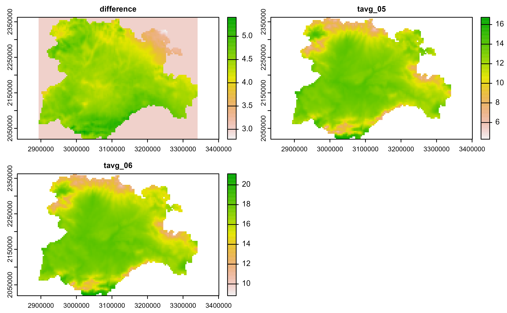
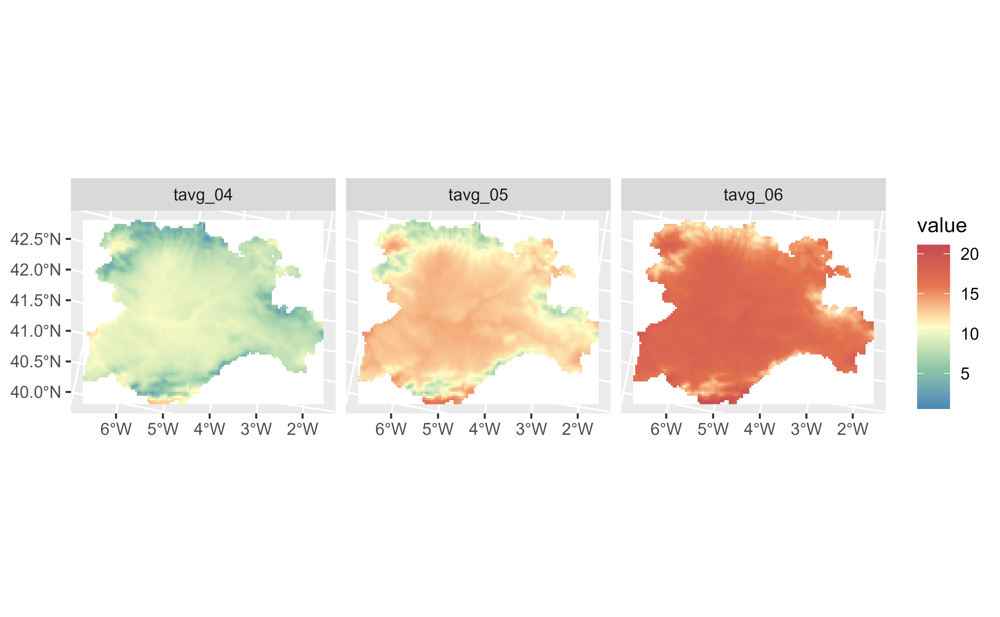
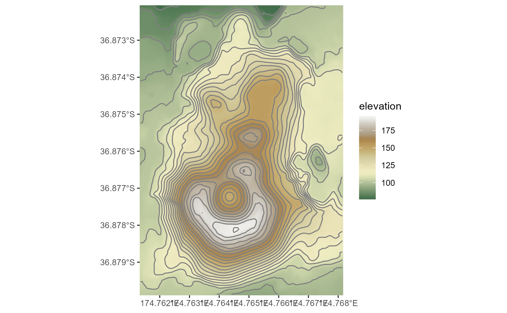
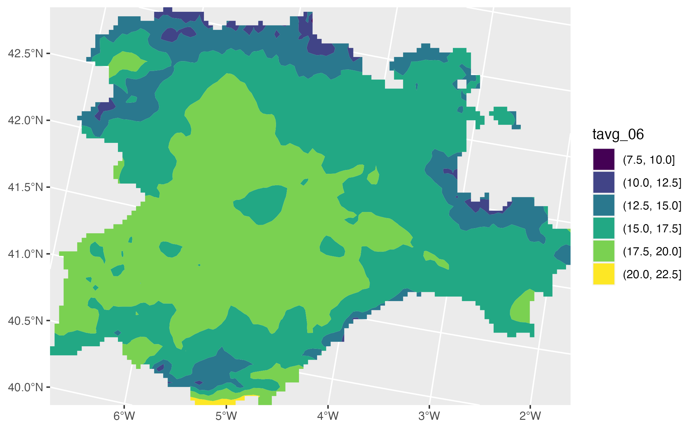
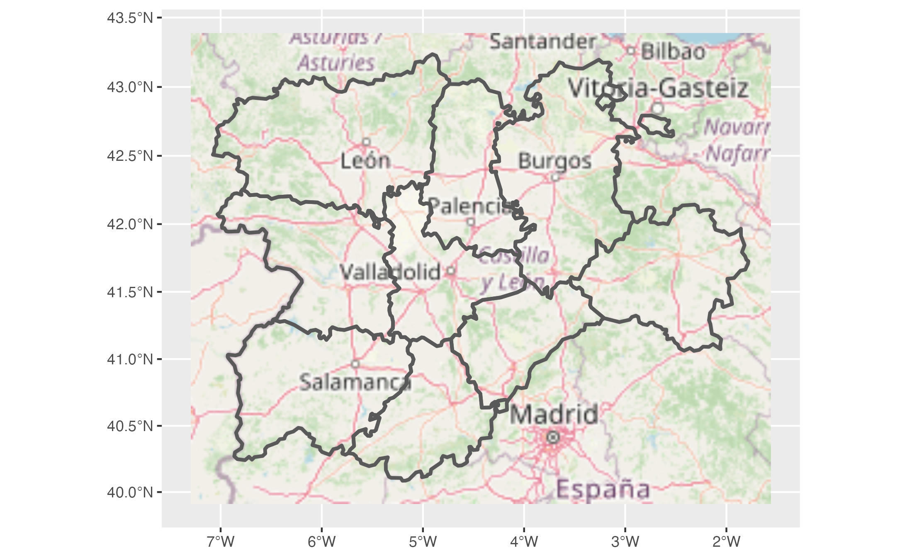
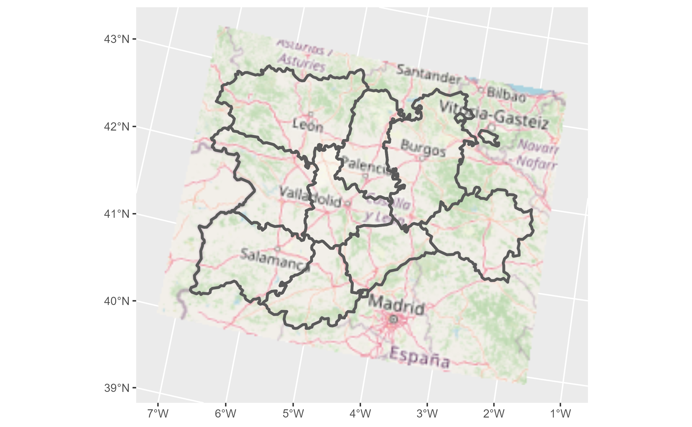
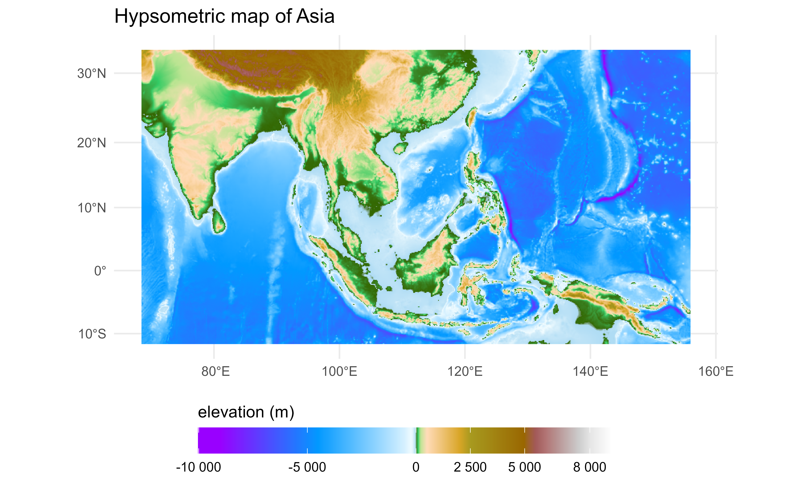
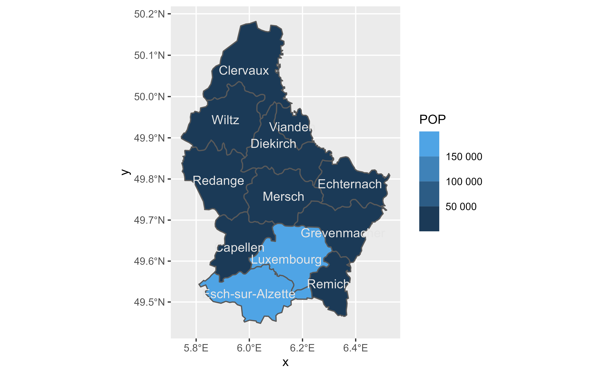
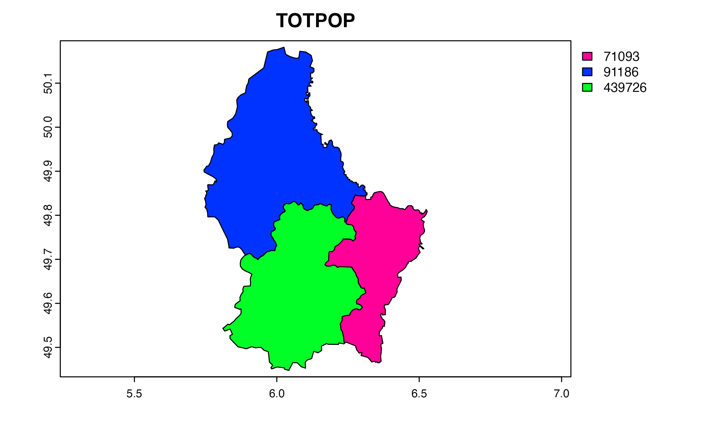

Welcome to {tidyterra}
tidyterra is a package that add common methods from the tidyverse for SpatRaster and SpatVectors objects created with the {terra} package. It also adds specificgeom_spat*() for plotting these kind of objects with {ggplot2}.
Why {tidyterra}?
Spat* objects are not like regular data frames. They are a different type of objects, implemented via the S4 object system, and have their own syntax and computation methods, implemented on the {terra} package.
By implementing tidyverse methods for these objects, and more specifically {dplyr} and {tidyr} methods, a useR can now work more easily with Spat*, just like (s)he would do with tabular data.
Note that in terms of performance, {terra} is much more optimized for working for this kind of objects, so it is recommended also to learn a bit of {terra} syntax. Each function of {tidyterra} refers (when possible) to the corresponding equivalent on {terra}.
A note for advanced {terra} users
As previously mentioned, {tidyterra} is not optimized in terms of performance. Specially when working with filter() and mutate() methods, it can be slow.
As a rule of thumb, {tidyterra} can handle objects with less than 10.000.000 slots of information(i.e., terra::ncell(a_rast) * terra::nlyr(a_rast) < 10e6).
Get started with {tidyterra}
First thing you’ll notice when loading {tidyterra} is that a set of packages would be also loaded. You can disable the message by setting Sys.setenv(tidyterra.quiet = TRUE).
# Disable message with:
# Sys.setenv(tidyterra.quiet = TRUE)
library(tidyterra)
#> ── Attaching packages ─────────────────────────────────────── tidyterra 0.2.0 ──
#>
#> Suppress this startup message by setting Sys.setenv(tidyterra.quiet = TRUE)
#>
#> ✔ tibble 3.1.8 ✔ dplyr 1.0.9
#> ✔ tidyr 1.2.0Currently, the following methods are available:
| tidyverse method | SpatVector | SpatRaster |
|---|---|---|
tibble::as_tibble() |
✔️ | ✔️ |
dplyr::filter() |
✔️ | ✔️ |
dplyr::mutate() |
✔️ | ✔️ |
dplyr::pull() |
✔️ | ✔️ |
dplyr::relocate() |
✔️ | ✔️ |
dplyr::rename() |
✔️ | ✔️ |
dplyr::select() |
✔️ | ✔️ |
dplyr::slice() |
✔️ | ✔️ |
dplyr::transmute() |
✔️ | ✔️ |
tidyr::drop_na() |
✔️ | ✔️ (questioned) |
tidyr::replace_na() |
✔️ | ✔️ |
Let’s see some of them in action:
library(terra)
f <- system.file("extdata/cyl_temp.tif", package = "tidyterra")
temp <- rast(f)
temp
#> class : SpatRaster
#> dimensions : 89, 116, 3 (nrow, ncol, nlyr)
#> resolution : 3856.617, 3856.617 (x, y)
#> extent : 2893583, 3340950, 2019451, 2362690 (xmin, xmax, ymin, ymax)
#> coord. ref. : ETRS89-extended / LAEA Europe (EPSG:3035)
#> source : cyl_temp.tif
#> names : tavg_04, tavg_05, tavg_06
#> min values : 0.565614, 4.294102, 8.817221
#> max values : 13.28383, 16.74090, 21.11378
mod <- temp %>%
select(-1) %>%
mutate(newcol = tavg_06 - tavg_05) %>%
relocate(newcol, .before = 1) %>%
replace_na(list(newcol = 3)) %>%
rename(difference = newcol)
mod
#> class : SpatRaster
#> dimensions : 89, 116, 3 (nrow, ncol, nlyr)
#> resolution : 3856.617, 3856.617 (x, y)
#> extent : 2893583, 3340950, 2019451, 2362690 (xmin, xmax, ymin, ymax)
#> coord. ref. : ETRS89-extended / LAEA Europe (EPSG:3035)
#> sources : memory
#> memory
#> memory
#> names : difference, tavg_05, tavg_06
#> min values : 2.786910, 4.294102, 8.817221
#> max values : 5.408157, 16.740898, 21.113781
plot(mod)
On the previous example, we had:
Eliminated the first layer of the raster
tavg_04.Created a new layer
newcolas the difference of the layerstavg_05andtavg_06.Relocated
newcolas the first layer of the SpatRasterReplaced the
NAcells onnewcolwith3.Renamed
newcolto difference.
In all the process, the essential properties of the SpatRaster (number of cells, columns and rows, extent, resolution and coordinate reference system) have not been modified. Other methods as filter(), slice() or drop_na() can modify these properties, as they would do when applied to a data frame (number of rows would be modified on that case).
Plotting with {ggplot2}
SpatRasters
{tidyterra} provides several geom_* for SpatRasters. When the SpatRaster has the CRS informed (i.e. terra::crs(a_rast) != ""), the geom uses ggplot2::coord_sf(), and may be also reprojected for adjusting the coordinates to other spatial layers:
library(ggplot2)
# A faceted SpatRaster
ggplot() +
geom_spatraster(data = temp) +
facet_wrap(~lyr) +
scale_fill_whitebox_c(
palette = "muted",
na.value = "white"
)
# Contour lines for a specific layer
f_volcano <- system.file("extdata/volcano2.tif", package = "tidyterra")
volcano2 <- rast(f_volcano)
ggplot() +
geom_spatraster(data = volcano2) +
geom_spatraster_contour(data = volcano2, breaks = seq(80, 200, 5)) +
scale_fill_whitebox_c() +
coord_sf(expand = FALSE) +
labs(fill = "elevation")
# Contour filled
ggplot() +
geom_spatraster_contour_filled(data = volcano2) +
scale_fill_whitebox_d(palette = "atlas") +
labs(fill = "elevation")
With {tidyterra} you can also plot RGB SpatRasters to add imagery to your plots:
# Read a vector
f_v <- system.file("extdata/cyl.gpkg", package = "tidyterra")
v <- vect(f_v)
# Read a tile
f_rgb <- system.file("extdata/cyl_tile.tif", package = "tidyterra")
r_rgb <- rast(f_rgb)
rgb_plot <- ggplot() +
geom_spatraster_rgb(data = r_rgb) +
geom_spatvector(data = v, fill = NA, size = 1)
rgb_plot
# Change CRS automatically
rgb_plot +
coord_sf(crs = 3035)
{tidyterra} provides selected scales that are suitable for creating hypsometric and bathymetric maps:
asia <- rast(system.file("extdata/asia.tif", package = "tidyterra"))
asia
#> class : SpatRaster
#> dimensions : 367, 683, 1 (nrow, ncol, nlyr)
#> resolution : 14263.38, 14231.61 (x, y)
#> extent : 7619120, 17361007, -1304745, 3918256 (xmin, xmax, ymin, ymax)
#> coord. ref. : WGS 84 / Pseudo-Mercator (EPSG:3857)
#> source : asia.tif
#> name : file44bc291153f2
#> min value : -9991.472
#> max value : 6156.079
ggplot() +
geom_spatraster(data = asia) +
scale_fill_hypso_tint_c(
palette = "gmt_globe",
labels = scales::label_number(),
breaks = c(-10000, -5000, 0, 2500, 5000, 8000),
guide = guide_colorbar(
direction = "horizontal",
title.position = "top",
barwidth = 20
)
) +
labs(
fill = "elevation (m)",
title = "Hypsometric map of Asia"
) +
theme_minimal() +
theme(legend.position = "bottom")
SpatVectors
{tidyterra} allows you to plot SpatVectors with {ggplot2} using the geom_spatvector() functions:
lux <- system.file("ex/lux.shp", package = "terra")
spatvector <- terra::vect(lux)
ggplot() +
geom_spatvector(data = spatvector, aes(fill = POP)) +
geom_spatvector_text(
data = spatvector, aes(label = NAME_2),
color = "grey90"
) +
scale_fill_binned(labels = scales::number_format()) +
coord_sf(crs = 3857)
The underlying implementation is to take advantage of the conversion terra::vect()/sf::st_as_sf() (see About SpatVectors) and use ggplot2::geom_sf() as an endpoint for creating the layer.
About SpatVectors
SpatVector objects are vector data. This means that they are a set of individual points with geographic information (i.e. location of restaurants), that can be also grouped to form lines (i.e. a river) and, when these lines forms a closed polygon, a spatial polygon (i.e. a country).
{terra} can handle vector files on the S4 system. There is other alternative, the {sf} package, that represents the same information on a tabular way. You can convert easily between the two packages like this:
lux <- system.file("ex/lux.shp", package = "terra")
spatvector <- terra::vect(lux)
spatvector
#> class : SpatVector
#> geometry : polygons
#> dimensions : 12, 6 (geometries, attributes)
#> extent : 5.74414, 6.528252, 49.44781, 50.18162 (xmin, xmax, ymin, ymax)
#> source : lux.shp
#> coord. ref. : lon/lat WGS 84 (EPSG:4326)
#> names : ID_1 NAME_1 ID_2 NAME_2 AREA POP
#> type : <num> <chr> <num> <chr> <num> <int>
#> values : 1 Diekirch 1 Clervaux 312 18081
#> 1 Diekirch 2 Diekirch 218 32543
#> 1 Diekirch 3 Redange 259 18664
terra::plot(spatvector, main = "SpatVector", axes = TRUE)
# To sf
sfobj <- sf::st_as_sf(spatvector)
head(sfobj, 3)
#> Simple feature collection with 3 features and 6 fields
#> Geometry type: POLYGON
#> Dimension: XY
#> Bounding box: xmin: 5.746118 ymin: 49.69933 xmax: 6.315773 ymax: 50.18162
#> Geodetic CRS: WGS 84
#> ID_1 NAME_1 ID_2 NAME_2 AREA POP geometry
#> 1 1 Diekirch 1 Clervaux 312 18081 POLYGON ((6.026519 50.17767...
#> 2 1 Diekirch 2 Diekirch 218 32543 POLYGON ((6.178368 49.87682...
#> 3 1 Diekirch 3 Redange 259 18664 POLYGON ((5.881378 49.87015...
plot(sfobj$geometry, main = "sf", axes = TRUE)
# Back to terra
spatvector2 <- terra::vect(sfobj)
spatvector2
#> class : SpatVector
#> geometry : polygons
#> dimensions : 12, 6 (geometries, attributes)
#> extent : 5.74414, 6.528252, 49.44781, 50.18162 (xmin, xmax, ymin, ymax)
#> coord. ref. : lon/lat WGS 84 (EPSG:4326)
#> names : ID_1 NAME_1 ID_2 NAME_2 AREA POP
#> type : <num> <chr> <num> <chr> <num> <int>
#> values : 1 Diekirch 1 Clervaux 312 18081
#> 1 Diekirch 2 Diekirch 218 32543
#> 1 Diekirch 3 Redange 259 18664On that sense, {sf} already has its own implementation of {tidyverse} methods. Since converting SpatVector to {sf} it is straightforward with no loss of information, {tidyterra} is specially focused on SpatRasters. See an example of how to work with {terra} + {sf} + {dplyr}:
library(dplyr)
library(terra)
library(sf)
spat_summ <- spatvector2 %>%
# to sf
st_as_sf() %>%
# dplyr
group_by(ID_1) %>%
summarise(TOTPOP = sum(POP)) %>%
# back to terra
vect()
spat_summ
#> class : SpatVector
#> geometry : polygons
#> dimensions : 3, 2 (geometries, attributes)
#> extent : 5.74414, 6.528252, 49.44781, 50.18162 (xmin, xmax, ymin, ymax)
#> coord. ref. : lon/lat WGS 84 (EPSG:4326)
#> names : ID_1 TOTPOP
#> type : <num> <int>
#> values : 1 91186
#> 2 71093
#> 3 439726
terra::plot(spat_summ, "TOTPOP")